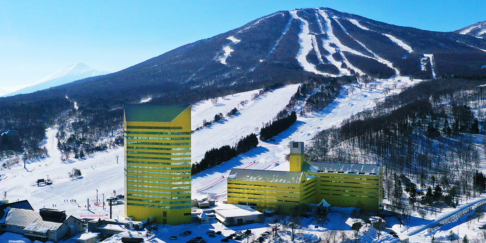

安比高原スキー場
安比高原スキー場（あっぴこうげんスキーじょう, APPI）は、岩手県八幡平市安比高原にあるスキー場。運営会社は株式会社岩手ホテルアンドリゾート。
例年12月上旬から5月上旬まで滑走が可能。シンボルは、4つの三角形で四季を表したマーク。
日本有数の規模を誇り、山形蔵王温泉スキー場と共に東北を代表するスキー場である。ゲレンデは標高1305mの前森山と1328mの西森山に広がる。ナイター設備あり。スキー場のほかに安比高原ゴルフクラブや安比高原牧場などもあり、滞在型のオールシーズンリゾートである。開発時には亀倉雄策がアートディレクターを務め、スキー場で目に入るすべてのものは亀倉がデザインした